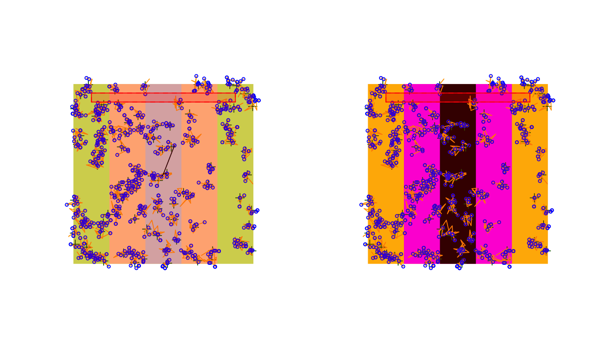

plot.RdPlot methods for different bSims objects.
# S3 method for bsims_landscape plot(x, col_H, col_E, col_R, xlim = NULL, ylim = NULL, ...) # S3 method for bsims_population plot(x, pch_nest, col_nest, cex_nest, ...) # S3 method for bsims_events plot(x, event_type=c("vocal", "move", "both"), tlim = NULL, pch_nest, col_nest, cex_nest, pch_vocal, col_vocal, cex_vocal, lty_move, col_move, lwd_move, ...) # S3 method for bsims_detections plot(x, event_type=NULL, tlim = NULL, pch_nest, col_nest, cex_nest, pch_vocal, col_vocal, cex_vocal, lty_move, col_move, lwd_move, lty_det, col_det, lwd_det, condition = "event1", ...) # S3 method for bsims_transcript plot(x, pch_nest, col_nest, cex_nest, pch_vocal, col_vocal, cex_vocal, lty_move, col_move, lwd_move, lty_det, col_det, lwd_det, show_tint=TRUE, show_rint=TRUE, col_tint, col_rint, ...) # S3 method for bsims_events lines(x, tlim = NULL, ...) # S3 method for bsims_detections lines(x, event_type=NULL, tlim=NULL, condition="event1", ...) # S3 method for bsims_transcript lines(x, event_type=NULL, tlim=NULL, ...) # S3 method for bsims_population points(x, ...) # S3 method for bsims_events points(x, event_type=c("vocal", "move", "both"), tlim = NULL, ...) # S3 method for bsims_detections points(x, event_type=NULL, tlim=NULL, condition="event1", ...) col2hex(col, alpha = FALSE) # S3 method for bsims_events_table plot(x, xlab, ylab, xlim, ylim, ...) # S3 method for bsims_detections_table plot(x, type=c("time", "distance"), xlab, ylab, xlim, ylim, ...)
| x | simulation object. |
|---|---|
| col | color values. |
| col_H, col_E, col_R | color values for the Habitat, Edge, and Road strata. |
| event_type | type of events to access.
The value is inferred from the input object when |
| xlim, ylim, tlim | x, y, time intervals. |
| xlab, ylab | x and y axis labels. |
| pch_nest, col_nest, cex_nest | visual characteristics of nest locations. |
| pch_vocal, col_vocal, cex_vocal | visual characteristics of vocalization events. |
| lty_move, col_move, lwd_move | visual characteristics of movement events. |
| lty_det, col_det, lwd_det | visual characteristics of detection events. |
| alpha | alpha channel for colors. |
| show_tint, show_rint | whether time and distance intervals should be displayed. |
| col_tint, col_rint | colors for time and distance intervals. |
| condition | conditioning type to define availability for each individual,
see |
| type | what the x axis should be: time or distance. |
| ... | other graphical arguments. |
The main plotting functions use a theme defined in
the option getOption("bsims_theme").
Overriding these default settings allows customization.
These plotting functions are called for their side effects and silently return the input object.
col2hex is modeled after col2rgb
and returns a character vector giving hexadecimal color codes with
or without alpha channel values.
b <- bsims_all(road=1, edge=2, move_rate=1, movement=0.2)$new() o <- getOption("bsims_theme") str(o)#> List of 17 #> $ col_H : chr "darkolivegreen1" #> $ col_E : chr "burlywood1" #> $ col_R : chr "lightgrey" #> $ col_nest : chr "darkgreen" #> $ pch_nest : num 3 #> $ cex_nest : num 1 #> $ col_vocal: chr "blue" #> $ pch_vocal: num 21 #> $ cex_vocal: num 0.5 #> $ col_move : chr "orange" #> $ lty_move : num 1 #> $ lwd_move : num 1 #> $ col_det : chr "black" #> $ lty_det : num 1 #> $ lwd_det : num 1 #> $ col_tint : chr "red" #> $ col_rint : chr "red"n <- o n$col_H <- "gold" n$col_E <- "magenta" n$col_R <- "black" op <- par(mfrow=c(1, 2)) plot(b) options("bsims_theme" = n) # apply new theme plot(b)par(op) options("bsims_theme" = o) # reset old theme col2hex(c(blu = "royalblue", reddish = "tomato"), alpha = FALSE)#> blu reddish #> "#4169E1" "#FF6347"#> blu reddish #> "#4169E1FF" "#FF6347FF"